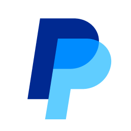
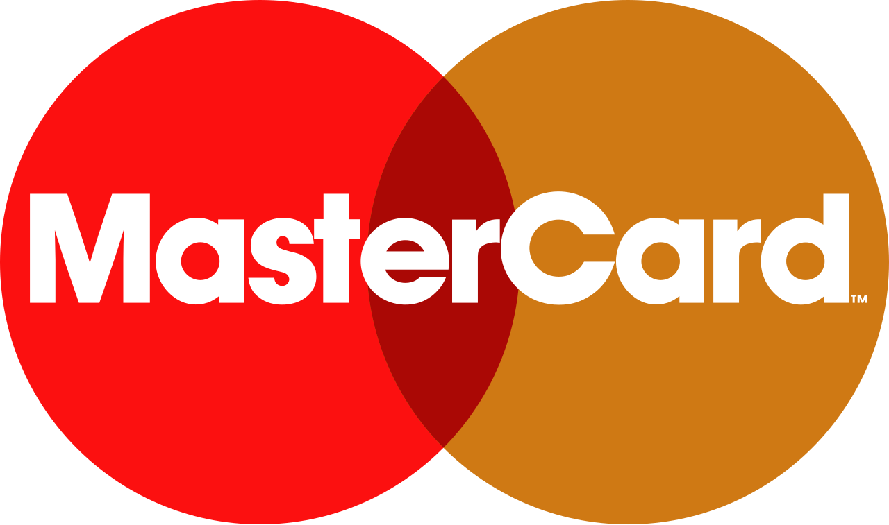
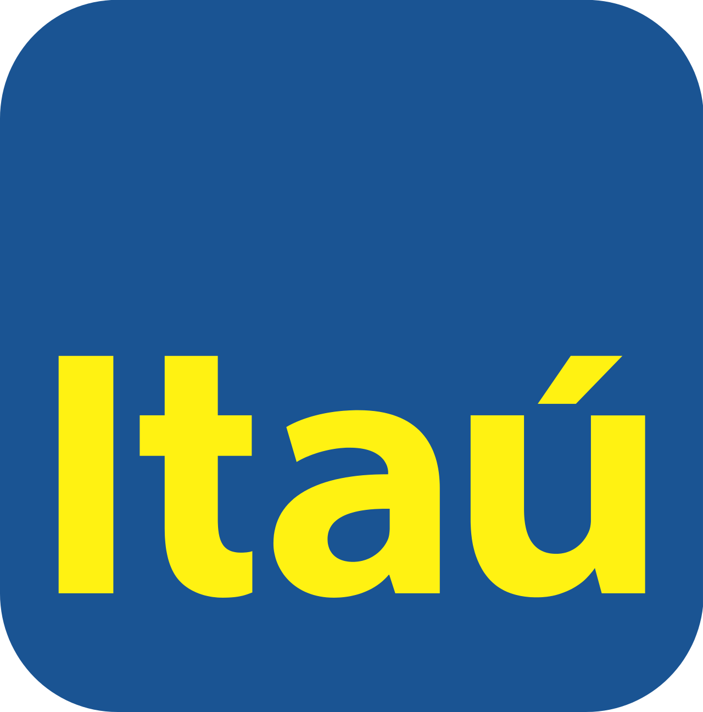

AtlasMagazine
No.022026년 9월호브랜드 아틀라스가 만드는 브랜드 읽기
커버 스토리
펜타그램이 다시 그린 심볼들
여덟 브랜드가 같은 스튜디오를 거치며 남긴 흔적을 비교한다. 형태를 단순화하는 방식은 같지만 그 결과가 향하는 곳은 브랜드마다 다르다.
기사 읽기


이번 호의 색 — 기사에 나온 브랜드 팔레트 34색
In this issue이번 호
- 카페는 무엇을 파는가
- 은행은 무엇을 지키는가
- 빠른 한 끼의 여러 문법
- jkr의 서로 다른 얼굴
아틀라스 매거진은
브랜드 아틀라스의 브랜드 항목을 가로질러 읽는 기획 지면입니다. 한 브랜드의 사전 항목으로는 보이지 않는 흐름을 여러 브랜드를 나란히 놓고 봅니다. 누가 그렸는지, 왜 이름을 바꿨는지, 어떤 색을 골랐는지 같은 것들입니다. 사실은 수록된 브랜드 항목에 기록된 것만 씁니다.